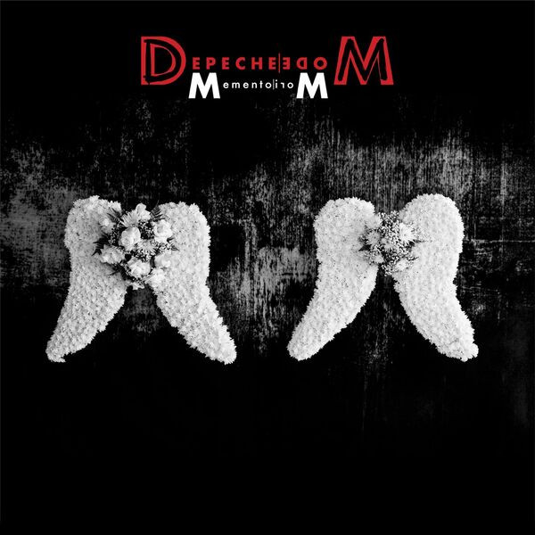
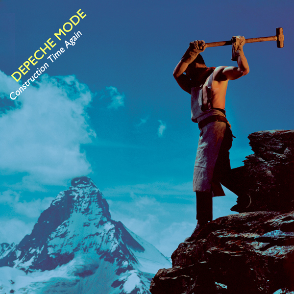

Ranking Project #2
Depeche Mode
Ranking the entire catalog of Depeche Mode songs, including album tracks and B-sides.
215
Esque
Lowest Non-Album track
instrumental
Not very pleasant. Even as far as instrumentals go, this one isn't good.
214
Slowblow
instrumental
Okay that bass is giving me a headache. I get it. Enough.
213
Dirt
Not a fan of this. I listened to the original Stooges version and it fits Iggy Pop just fine. Does not fit Dave.
212
Introspectre
Lowest Playing the Angel track
instrumental
A mood piece and nothing more. Totally forgettable outside the context of the album, like most of these short instrumentals.
211
What's Your Name?
Lowest Speak & Spell track
Does not hold up in any way, shape, or form. It's just really dumb. I remember liking it when I was younger, but now it makes me cringe. Especially the response vocal 'hey hey, what's your name?' and 'P-R-E-double-T-Y.' Ugh, make it stop.
Album version, if you have to.
210
Eternal
Lowest Spirit track
Blah. Boring.
209
John the Revelator
This is a cover of an old Blues song, and there are some compelling versions out there that care about the story that they are trying to tell. I'm just not feeling the urgency that is getting expressed in the vocal performance. I can't bring myself to care about whatever it is Dave is shouting about.
208
Barrel of a Gun
Lowest Ultra track
Starts off with some instrumentation that sounds like it's gonna be good. Then Dave starts singing and I hate it. First song on the album and I think it made me dislike this album for years. Listening to it again now, I realize this was really the only major misstep.
None of the mixes fix or hide the issues I have with this song. Might as well stick with the album version

207
Sonata No. 14 in C#m (Moonlight Sonata)
instrumental
Probably the most uneventful and uninteresting DM recording to this time. It's just Alan playing Beethoven on piano. It doesn't have any interpretation or production that makes it stand out from any other recording. Disappointing.
206
Jazz Thieves
instrumental
They are really into this crunchy isolated bass guitar sound. Too long by half.
205
Little 15
Lowest Music for the Masses track
I've never cared for this song, and that it was released as a single, instead of Sacred, was unforgivable. Martin should have sung this, which is proven out with the release of the demo version (30 years later).
Demo Version. It's still not a great song, but Martin singing it is a huge improvement. The smoother vocal quality makes this song work. One can only imagine if this would have been more popular had they kept Martin on vocals.
204
Pimpf
instrumental
Very repetitive, and drones on quite a bit. It has interesting elements though, which makes it tolerable. The crescendo at the end where it all comes together feels epic, but doesn't really pay off to anything.
Single Version. The beginning is much better and excludes the reprise/instrumental at the very end.
203
Happens All the Time
It's alright. Sort of plain. Doesn't bother me much, but I don't necessarily desire more listens.
202
Jezebel
Lowest Sounds of the Universe track
Oof. This is probably supposed to be that one bizarre slow song that Martin sings on (almost) every album. Other than the synth in the melodic break, the song is a mess. A bunch of pieces that don't fit together, pulling in different directions. Maybe it could be more, but it's not good as is.
There is a SixToes Remix, but there is no improving this song.
201
Get Right with Me
Lowest Songs of Faith and Devotion track
So much faith and devotion. Truth in advertising I guess. I think the song is kind of silly. I get what they were going for; it has a gospel flair for sure. It's just not very good.
200
Sibeling
instrumental
Not the best instrumentals along with this album. This one is slow, boring, and same-y throughout.
199
Angel
Lowest Delta Machine track
Dave gets in these blues-y gospel performance modes every now and then, and it rarely works. Definitely does not here. Chorus is not terrible, but it's hard to get that far.
198
Comatose
Lowest Exciter track
This album is littered with that tinny, sharp-attack, pop sound. I do not like it. It's almost featured it the beginning and I just want to turn it off. The song has some good moments after the intro.
197
You Move
There is a quality to the older DM songs that is missing. Whatever that mystery stuff is—I don't know how to describe it—they seem to have run out of it long ago. They are still making okay music, but it's not magical.
196
Secret to the End
I don't love Dave's vocals on this. He sounds stuffy, like he has a cold. There isn't much to work with for him regardless. It's aimless and wandering and still repetitive.
195
Where's the Revolution
Man, it's disappointing when you are like [fist raised] "Yes! I am down with this message! But can we have a better song behind it? This one kind of sucks." Makes me sad.
194
Christmas Island
instrumental
Was this the first in this genre of esoteric soundscapes that would start filling the gaps between songs on the next few albums and B-sides? It if fine for what it is. It's pretty listenable even. But it is long, and evolves slowly.
There is an Extended Version, but it doesn't add anything interesting.
193
Poorman
A Trickle-Down Economics reference. Nice. For real, I'm super into this. I love what you have to say, but the songs aren't equal to the enthusiasm for this message.
192
Oh Well
It's not a fun listen. It gets on my nerves with it's repetitiveness.
191
Slow
You immediately get hit with the blues vibe again, and you wonder if maybe this is the time they'll pull it off. And ... kind of? It's not as bad as most of the songs that do this. There is something interesting about it, and it ends up being pretty listenable. But it is devoid of what makes them DM.
190
Memphisto
instrumental
Includes the barest bit of interest in descending melody of vocal 'ahs.' Otherwise just another long, droning instrumental.
189
A Photograph of You
Lowest A Broken Frame track
I used to like this song a lot, but I find it tedious now. The whistling is no longer charming. I still has a jaunty beat, but there are other songs on this album that do it better.
188
Ghost
Very much meh. Inoffensive, but forgettable. Not a B-side, technically, but it's definitely got B-side all over it.
187
Zenstation
instrumental
One of the middling instrumentals. Not bad overall, but some parts are better than others. It does feel like a fully realized song.
186
Fools
Initially seems kind of plain. But man, that synth-horn bridge! Kind of rescues this song.
Bigger is better. More interesting and alive. Hides some of the songs flaws.
185
Long Time Lie
Kind of engrossing somehow. There isn't anything new here really, it's just well done for what it is.
184
Soft Touch/Raw Nerve
It's mostly an average effort. No high, no low. Never varies from that middle groove of being just okay. Doesn't inspire.
183
Oberkorn (It's a Small Town)
instrumental
This is a strange song, it has so little personality. The Development Mix has an entire section at the end that is more interesting and moody.
Development Mix. The best version of this song begins where the single version ends (4:45).

spotify link
182
My Cosmos Is Mine
Lowest Memento Mori track
Weird choice to start this album off. I like how mysterious it starts, but it doesn't evolve to anything interesting.
181
Rush
It's not that I think this is a bad song. It's an okay song. But I find it kind of tedious?
There are a few mixes but none that do anything to improve the song substantially.
180
Lovetheme
instrumental
It's a short groovy thing. Not bad. It isn't long enough to really get anywhere, but makes the most of it's two minutes.
179
The Great Outdoors!
instrumental
Pretty, but boring. It's pretty boring. If it ended at around three minutes it would be better.
178
Uselink
instrumental
Atmospheric and quick. I actually like that it has some variation and movement in it. It's actually pleasant and listenable, for what it is.
177
Martyr
It would be a so-so B-side, so it suffers from the expectations of being a single. It's just not very interesting.
176
Mercy in You
This album is a turn. And the half alt-synth/half alt-rock grunge mixture is tiring. This song, in particular, doesn't have the energy to keep up the balance.
The BRAT Mix relieves some of that rock star pressure that the album version is struggling with. This mix is a little more chill, and is a more pleasant listening experience.

175
My Joy
Not one of their best B-sides, but I do like the 'you mo-oo-o-oove me' part. That gets stuck in my head.
174
The Dead of Night
I loathe the beginning of this. The verses are kind of dumb. It's a total mess. And then a really nice pre-chorus and chorus appears! It's frustrating how erratic it is. There are interesting ideas here though.
173
The Worst Crime
It's preachy, and it's very obvious (again). I can totally do preachy when it's clever, but this is ... not. I think it's interesting how they chose to record it. Slow and plodding, and doesn't waver from it. It's an okay song though. Has some throwback vibes.
172
Headstar
instrumental
Pretty cool driving beat with stops and starts. It's good.
171
I Want You Now
It's an okay song, but the blowing-up-a-sex-doll sounds make it all a little creepy. I thought I'd be interested in a version that had more instruments and (a lot) fewer sfx, but the live version with piano is not really an improvement.
170
Stjärna
instrumental
It's Swedish for star. Huh. Thanks internet. This isn't bad, it's just not very interesting or listenable either. It's okay.
169
All That's Mine
Dave sings too low again here. It doesn't sound like a comfortable range for him. The chorus has some old-school DM vibes—Violator-like. Overall a middling song, that is a pale homage to World In My Eyes. But I do appreciate the effort.
168
Kaleid
instrumental
This is the most interesting instrumental of the three from the Violator B-sides. It's still not great. But it does have a beat and some interesting chord changes at least.
I chose the remix here because it has a better build up and more variations without being much longer.
167
Surrender
That vibrato guitar strum is cool; kind of keeping me interested in this song. Dave's vocal is plain and unenthusiastic. But the chorus is lovely and the song is not boring.
166
Don't Say You Love Me
The lyrics are interesting. I like the simple structure. But other than that it's kind of plain.
165
Miles Away/The Truth Is
This song ... doesn't fit here. It's not a great song anyway, but this is different. I checked to see if maybe it was a cover, but it's not. Dave wrote it though, and that probably has something to do with it. Doesn't feel like a Depeche Mode song to me.
164
Spacewalker
instrumental
It is what it is. But it's the last one they ever do, so from a nostalgic perspective I appreciate that this is the final example of the short inter-album instrumental. It was a Depeche Mode staple.
163
Shout!
I don't like the production. The vocals are so far down in the mix it's impossible to pay any attention to them. It's probably an okay song, but that percussive hit that sounds like a gunshot gets annoying.
The Rio Mix is more interesting. It doesn't fix the poor vocal balancing issue, but the latter half of the mix has a playful synth that I like a lot. Adds some flavor that the vocals can't manage.
162
Black Day
A weird little song. Very different from their other stuff, and notable only really for that. I do like it though, in the same way I like the 'Lounge Version' of Love In Itself.
161
I Feel You
There is too much going on in this song. It starts off cacophonous, and it never relents.
There are no mixes that simplify the song and retain the vocals that I could find.
160
Somebody
Lowest Some Great Reward track
I've never been as enamored with this song as everyone else seems to be. I don't think it's a bad song at all, but it's such a departure from everything else to this point. It's a good performance though. And the worst song on a great album is still top notch.
Remix. It's cleaner and slightly more interesting than the album version.
159
Boys Say Go!
This could have, perhaps should have, been a Yazoo song. It's so similar to Situation. I can hear Alison singing this and doing a better job than Dave. Too quirky for DM; just right for Yazoo.
158
Agent Orange
instrumental
This is actually not that bad. It evolves and tries to tell a story, or at least evokes a sad, war-torn feeling. It's thematic and could fit in a movie soundtrack. It definitely works as a B-side.
157
Should Be Higher
Some pleasant moments. Dave's doing some vocal stuff that he doesn't normally do. It's a nice song, but nothing catchy or memorable.
156
In Your Memory
This probably has a little nostalgia affecting the ranking. This was the first single I bought, and the first B-side i had ever heard by them. I remember thinking it was so good. I don't think it's as good as I did, but it's fine. It would fit right in on either of the past two albums. It's a sound they've moved beyond.
Single Version is sufficient. The Slik Mix is pretty long, and pretty repetitive. It's good though.
155
Painkiller
instrumental
It's fine, but it's a lot. Quite heavy and has a throbbing to it that can get overwhelming. As a B-side it works alright.
Tempted to go with Junior Painkiller here since it's a third the length, but I'll give it the full due.
154
Lilian
A fine, average song. Doesn't reach for much, and accomplishes that just fine.
The Single Version is pretty tight and loses the excess intro and outro.
153
Welcome to My World
I do like the string accompaniment in the chorus, and it would probably be better with an actual string section performing it. There is a good song in here, but it's not quite there. It is atmospheric, and provides an intriguing welcome to the album.
152
Going Backwards
Clearly a product of 2016, when we were all wondering WTF was happening to us all. They aren't usually this obvious, but I could see the argument that this was no time to be subtle. I like the bridge. It's mostly not an interesting song even if I feel the message.
151
Dressed in Black
Lowest Black Celebration track
Maybe too dark? It's ... really down there. It fits the album, and is a fine song. But it is insistently bleak. By this point on the album I've almost had enough.
150
Satellite
I will be a satellite of hate.' This is a dark song. I don't think the stoccato bass sound works, and in fact the song is much better in the one verse without it. I think it could be a better song with different production.
149
Corrupt
Trying to end on a high note, musically. But lyrically, this is dark and mean. Very aggressive and off-putting for the closer on the album. I guess it's an okay song, but leaves a bad taste in the mouth.
Unskippable silence on the album track before a very short instrumental reprise of Wrong.

spotify link
148
Shame
Lowest Construction Time Again track
It all seems so stupid, it makes me want to give up. But why should I give up, when it all seems so stupid?' Good lyrics. But also a slide whistle. Mixed bag.
147
Get the Balance Right
I like the idea of this song, but for some reason it just doesn't land for me. There is nothing specifically objectionable about it, but if offered to listen to almost any other Depeche Mode song, I'd definitely do that.
The single version is plenty. I like the beginning much more.
146
Macro
Kudos for Martin doing something different than the typical Martin song. There isn't anything that impresses outside of the chorus. The chorus is really good though. Kind of a mixed bag, but worth the lesson.
145
Any Second Now (Voices)
Is this the first song with Martin singing? This song is what Depeche Mode was about to turn into on the next album. Fits right into A Broken Frame. It's lovely, but kind of too simple to be very memorable.
The instrumental and the Altered versions are both really good. It proves that this song doesn't need the vocal track. But I like the vocal version because it's Martin.
144
Speak to Me
Moody, emotional, gives me chills. The perfect album closer. Will be one of those songs that can't be fully appreciated outside the context of the album.
143
The Sun and the Moon and the Stars
Interesting, moody, and cool. Under-produced to the point of sounding like a demo. Still manages to be a good song.
142
It's Called a Heart
This is what I imagine a record label gets when they ask Depeche Mode for a pop song. It's so bland and boring. It's not bad, and is pretty catchy. But it also ... doesn't have any heart. Haha. But for real, I don't believe for a second that any of them have their heart in this song. Should have been the B-side to Fly on the Windscreen instead of the other way around. I wonder how this song would have been received if it was originally on Some Great Reward?
141
Sometimes
Somebody Part Two? Kind of. It's simpler and not as heartfelt. But it totally has the Somebody vibe.
140
Poison Heart
Has a touch of that bluesy stuff they dabble in. But it's not over-the-top, and it has a lovely chorus to rescue it. It wanders around a bit, but manages to hold itself together.
The Soulsavers Re-Work adds just enough more of that thing that makes this song work. Really good.
139
Stories of Old
Oh man, this is where it gets tough. This is a great song that I love, but I know it's not going to rank as high as others. It's a crime how many very good songs are on this album.
138
Two Minute Warning
The title is a little bit cliché, and it's very earnest about it's own importance. Alan's writing is not bad, however I can't help but think Martin would have been able to make this more clever.
137
Work Hard
This could be a Devo song. Pairing this with Everything Counts is genius. It's basically 'Theme for a Grind,' perfect for the modern era. Shocking how relevant and timeless this song is.
Single version is fine.
136
Monument
Moves at the same basic speed for the entire song. It drags. This whole album has a muddiness to it and this song suffers the most. One of a few songs that would fit better on Construction Time Again.
135
Wrong
Stop yelling at me.
134
My Little Universe
Odd and unconventional, which makes me kind of dig it. Not saying it's a good song—it's not. But I still really like it somehow.
133
In Chains
It's alright once it gets going. Takes awhile to get there though. And even then, never overcomes some laborious lyrics.
Alan Wilder Remix is a similar realization as the album: very slow build, then play up the instrumentation to cover the lyrics. It's an improvement to the listening experience.
132
Fail
I think this song accomplishes what it sets out to do. It's still not the great song that I was hoping for from this album. It does the message justice though. Spirit is so much about the message, they neglected to form the message into good songs.
131
The Darkest Star
Another closer doing the dirty work of punctuating the emotional thread of the album. A really good song, that is much better in context of the album. Played on it's own, it sounds too self-important and overly dramatic.
130
People Are Good
Gets repetitive. But compared to what they've been doing for the last 10 years, this is still welcome.
129
Nodisco
Funny enough, it's perhaps the most disco song on this album. Disco-adjacent, at least. If that was intentional irony it was too subtle for me. It's still on okay song, just not as interesting as others on the album.
Just the album version. I remember a Razormaid mix I had that was just extended/repeated segments. I doubt it really improves the song in any way though. Just makes it longer.
128
Happiest Girl
This is an okay song, and I thought it fit well as a B-side with World in My Eyes. But it's not remarkable. Excepting the bridge, which is good, once you've heard a bit of it, you've heard the whole thing.
Jack Mix. I believe this was the standard release version.
127
Dream On
I get the sense they are trying to capture some magic from the past. It's not working very well. The song is okay, but it doesn't do much. Martin's backing vocals add some richness to the chorus. There's no big idea here though, no emotion, no thematic context.
The Single Version (called Edit on Spotify) is fine. It's short.
126
Condemnation
This is where this album figures out what it wants to be. I don't think this song is that great, but it's clear that there is intention behind it. May have been better with Martin singing.
The single was the Paris Mix and it's a little cleaner than the album version, and has the backing vocals more forward. It's an improvement.
125
Soothe My Soul
Kind of funky. But mostly straightforward and ordinary. Feels like the 'we need an obvious single' track. Uses all the tricks Personal Jesus did, but nowhere near as effectively.
124
Free
Not bad, and for a B-side I can get into this. Surprisingly all the B-sides for this album are decent.
123
The Bottom Line
Starts off chaotically, then Martin pulls it together. Really good vocals. The pedal steel is a nice touch as long as they are keeping it subtle.
122
Shouldn't Have Done That
This song is only this high because of 45 seconds of brilliance. The marching build-up that resolves into a slice of life with crying baby, laughter, chatter, slamming door, what can only be called a howl, and then orders barked by some authority. It really evokes a story. The rest of the song can't live up to it. I do appreciate the harmony. This should be a more fun song than it is.
121
Goodbye
Even though the blues lick throws me off the song immediately, I want to stick around to see what develops. Really captivating chorus. Uneven, but still engaging throughout. Dave feels 'gyewd' at least.
120
Blue Dress
Lowest Violator track
Well, the worst song on an incredible album still has a lot going for it. And there is nothing wrong with this song at all. It would have been interesting in an alternate history if this song had been on Music for the Masses, and The Things You Said had been here in it's place.
119
Breathe
Those tinny pops make another appearance, not adding anything to the song. I like that this song embraces it's weirdness. The lyrics go off the rails in a good way. And it's largely a pretty simple arrangement.
118
Always
Martin songs usually either work or don't. This one largely doesn't work. But then it gets to the chorus which TOTALLY works. Wonderfully and beautifully. I wish the filter on the vocals during the verses weren't so crunchy, and that the verses were approached with the same care as the chorus.
117
Judas
More faith, more devotion. This is a good song though. Martin's performance is excellent, even if it gets lost a bit under the screechy string sounds.
I have to give it to this live version. This arrangement is so good. And the backing vocals are adding just that little bit of weight it needs. It makes the album version feel hollow.
116
Better Days
Another good B-side! It's straightforward, but manages to be both cool and catchy. Simple and fun. Reminds me a lot of Inspiral Carpets.
115
Nothing's Impossible
Pretty cool. Tries some interesting things in the mix that actually work well for this song.
114
Scum
I like the pace of this. This sounds like a DM song. I don't think it's terrific, but it does belong.
113
The Child Inside
Best Martin song since Home. It's well put together and knows what it's going for. Sounds complete and intentional. Bridge is also lovely.
112
Only When I Lose Myself
There are some lovely moments in this song that I wish there were more of. It starts great. There are other segments that just have way too much glitchy, hard bass. It loses the journey it started on, which is too bad. It ends up being a fine song that I feel like has a better song in it somewhere.
111
(Set Me Free) Remotivate Me
This song will forever be attached to Master and Servant in my brain. It makes the perfect single, and I used to listen to the 12'', flipping the A and B sides one after the other. It's a terrific and thematic song.
The Release Mix is good but overly long. The Single Version gets the same points across more efficiently.
110
Flexible
A lot going on here. I do like all the sounds they accumulated for it. The faux-guitars, faux-horns, and percussion noises are all interesting. 'Open the window and out go ideals.' The lyrics aren't always good, but he's on message.
109
People Are People
Funny that this is the song that really captured my attention and put DM on my radar. I think that their best stuff was still ahead of them. It's a good song, and probably the most radio-accessible since Speak & Spell. I love when Martin makes the message this clear without being blunt and ordinary.
The Different Mix is a good mix that retains the spirit of the original, but it has some janky edits that are annoying. Gonna stick with the album version.
108
Just Can't Get Enough
I'm having a hard time figuring out where I stand on this song. I may have finally gotten enough. On one hand, it feels more dated that the other songs on the album to me. It's still a strong tune, just hard to isolate it from the thousands of times I've heard it. The melodic synth fill (1:23) seems fresh, but I'm struggling to hear anything new here. My brain knows this is a solid song.
The Schizo Mix is really good. Carries on a bit, but doesn't try to re-imagine the song, which I appreciate. I resorted to listening to the several live versions, and the LiVE SPiRiTS version is VERY GOOD! Honestly this may be the best version for me, even though I'm supposed to be ignoring the live stuff. This has the energy that I'm no longer finding in the original version.
107
Sea of Sin
I like this B-side quite a bit. The drums are perfect for it. I also really buy Dave's performance on this. His whisper-singing works, and then his build up to the chorus stands out. I like the melodic break between the first two verses, and the bridge is really solid. Good song!
The Tonal Mix was the released single version.
106
The Sweetest Condition
Pop pop pop cracklepop. Sigh. I'm not penalizing for it. Is the song any good? Yeah sure whatever.
105
Hole to Feed
Better than average. It has a lot of Faith and Devotion vibe. It does have an interesting structure, and I like the slower portion a lot.
104
It Doesn't Matter
I really love all the different sounds in this. Martin's singing is also really good. It's a beautiful song, and put together perfectly.
103
Dangerous
A good song, but I would like it more eliminating the sharp, percussive, popping sound at the beginning. Otherwise a pretty solid if uninspired B-side.
102
Suffer Well
Goes a little overboard on the fuzz and bitcrush filters. There is a good song under there though. Could be mixed differently to better effect.
101
Never Let Me Go
The pieces fit well. Has a different feel than the rest of the album, but it's a good song.
100
See You
Dave's singing is quite good (and different) on this track. He has a smoother, breathier quality than he has in other songs. The lyrics are pastoral, super basic, straightforward love song material. Not inspiring, but not inane.
Extended Version. It extends the intro and outro a bit, but is otherwise not much different.
99
Freestate
I think this song exemplifies an issue with this album. The songs are well-written, but the production doesn't always suit them well. There is a heavy emphasis on guitars and, often, a loud, exhausting bass. It would be nice to introduce those instruments as support and not feature on every song. I like this song, but it's all about the guitar.
98
Damaged People
Oh man, I wish they took these kinds of chances still. This is so interesting and risky. There is undeniably still enough of that stuff that makes it still feel like a DM song. But it also is ... other. Lots to experience in this song. Really like it.
97
Ice Machine
Really like this B-side. It's not the cleanest performance, but neither is the A-side.
The single version. Side note: there are so many covers of this song!
96
A Pain That I'm Used To
The smooth guitar is an excellent counterpoint to the aggressive chorus. This definitely feels like a Depeche Mode song.
I love M83, and I like that their Remix softens this song up just a bit. But ultimately it's too far from the original that I'm ranking to consider it. Album version it is.
95
Easy Tiger
instrumental
I like that it gets pretty funky. One of the more listenable instrumentals.
I think it's good enough to warrant the Full version instead of the shortened album version.
94
World Full of Nothing
Oof, it's easy to forget just how dark this album gets. It's a simple and pretty song. And it's effective; I feel that sadness. Brings back the synth-brass sounds used a lot on A Broken Frame.
93
Before We Drown
I do like how it has a particular speed, and it's not over-produced with filters and crunch. It just sounds like Depeche Mode. Good stuff!
92
Light
I think this is delightful. I love Dave's vocal sliding up and down. The simple drum machine is refreshing. It's underarranged and better for it.
91
Puppets
That super low synth sound when it goes into the chorus is so rich. I want this song to have more of that full range. It's 'ping-y,' which makes sense for the synths they had. I think an updated production of this song would be interesting. The bridge is a little weak.
Album version. There is a Royskopp Remix, but it has a different vocal performance! That's a cover, not a remix.
90
Soul with Me
Cool and kind of lounge-y. I like this a lot.
89
Nothing to Fear
instrumental
Solid instrumental, one of their best. Very catchy melody.
88
More Than a Party
It starts off driving and fast, then gets faster. 'More, more, more.' It makes sense, and is definitely insistent. Not a bad song at all, if exhausting.
87
New Life
The older stuff isn't going to hold up in the same way as the mid-era will. Still, this is a good song, and as the first track it sets a tone for what we're going to get.
Album version is superior to Remix. The beginning is a better introduction to the album and the song. The third verse is also more interesting on the album version.
86
Caroline's Monkey
Really has a World In My Eyes thing going. It has ups and downs, but it's a nice listen. They don't overdo it, where they would definitely have done so if this song were on any of the previous four albums.
85
Broken
Dave's vocal register is definitely off. It's deeper, and I can't help but think that if he were able to sing this a little higher, this would be a great song, instead of a merely good one. It's probably age—happens to all of us. I am convinced there is a great song in here though.
84
New Dress
Obviously it's dated. Not that the message is. Still holds up as a good song. Love the driving bass. It's a surprisingly simple arrangement: bass, synth pad, drums. It works really well. I've only just noticed that it ends on the piano chord that starts Stripped. So that was probably the first and last sound on that side of the record.
83
Nothing
I think I used to like this song a lot? I find it okay now, but nothing special. It doesn't stand out on this album in a positive or negative way. Just a song.
Headcleanr Rock Mix is very rowdy. Maybe not better, but since I've heard the original so many times, I do find it refreshingly interesting. Sounds like Madchester a little.
82
The Love Thieves
I like that this is a pretty chill song, and never tries to go hard. I'm not crazy about the strange guitar solo, but at least it doesn't take over the song. The song could be a touch shorter, but a small gripe about an otherwise pretty solid song.
81
World in My Eyes
Probably controversial, but this was never a favorite of mine. I have come to appreciate the way it starts the album off though, and there is a lot to like in the song. It doesn't have the same lush-but-dark fullness that other songs on this album have. It stands apart as a very good song, but without the substance that the rest of Violator brings.
I'm going off script a little here. Cicada Mix is a fresh take on this song that works really well. It doesn't resolve any of the issues that I have with the song, but as a variation, it's relevant.
80
Tora! Tora! Tora!
It's a more complex song than I remember. I've probably never listened to it very closely. It's quite good.
The From Mike Snow Remix is intense and trippy, but doesn't always play to the song's strengths. That said, I think I am going with it as my preferred version. The album version is still great though, and would suggest it for anyone hearing the song for the first time.
79
To Have and to Hold
We're getting into the really good songs on this album. This is a nice song, but probably not as strong as the other songs, most of which are classics.
I think Spanish Taster should be the seminal version. It's brighter, not so muddy, but retains eveything that is interesting about the original.
78
Sister of Night
Other than the opening, this feels like a throwback. Really nice chorus. I would have left out the middle portion where it feels like it needs a bunch of loud drums all of a sudden. That urge to rock on this album is really a bummer.
77
Perfect
Ooo a legal-themed song! Could have been hokey, but it's really pretty good.
76
In Sympathy
Not as good as the songs surrounding it, but undeniably is lifted up a bit by them when listening through. Benefits from the album context. Not as strong on it's own.
75
Leave in Silence
It's an odd one, for sure, but it works. Good introduction for the album, really separating it from Speak & Spell and the Vince days. Builds, deconstructs, rebuilds. Lots of interesting sounds and great drums. However, I don't like the way Dave's voice is being utilized. In a given four-line verse it will go whisper/whipser/speak/yell. The whispering works, but the yelling doesn't.
Longer is good, but not sure this song warrants more of it. It's pretty good where it is. The single version is 45 seconds shorter, but that's not necessary either. Stick to the album version.
74
Pleasure, Little Treasure
Such a catchy beat. Impossible to stay still listening to it.
Glitter Mix for sure. It's just more and better, and that's good. Even the weird backwards speaking, and staccato clips from ... I don't know what song. It's so interesting.
73
Waiting for the Night
This is the stuff right here. This is what Violator is all about. Dark, lush, ever-so-slightly hopeful bridge. It's beautiful. Part of what marks this album as so good is the consistent, high-quality lyrics. Martin at his best.
72
No More (This Is the Last Time)
This isn't that bad. Right? It's getting hard to tell. I think it's a not-bad song.
71
Dreaming of Me
I kind of wish it were several BPM faster. It sounds like my Walkman battery is running low. Despite that it's a fun song and represents the good part of the goofy energy the Vince days had (there is a dumb side, too). Regardless, it would never be seen again after this album.
The single version. Although the ending is different? I like the one with the squealing and oopsie note.
70
Goodnight Lovers
This is good. This is what we all want. More of this. This is well-executed production of a song that is asking for this type of treatment.
69
I Am You
This song is so close to that magic. It's almost there. I think it's getting in it's own way though. Make it a little less about the bass, and more about those high, soft pads. And don't dive into the glitchy, compressed vocals. All that noise is detracting from a very pretty ballad.
68
In Your Room
It doesn't fit the album theme, but it's a terrific, well-executed song. I like how it slowly builds. It definitely sets a mood.
None of the mixes successfully capture the mood that the beginning of the album version has, and I think that build up is a critical part of it's success.
67
My Secret Garden
Weirdest lyrics on this album. Martin would really figure things out from here.
Further Excerpts is really good, but since it's instrumental, I'll go with album version.
66
When the Body Speaks
I like this song a lot, but the Acoustic version is what we should have gotten on the album. So beautiful when it is given the right treatment.
Acoustic. This is so good. Makes you realize the driving bassline is completely unnecessary.
65
Newborn
Damn, this is better than most of the songs on the album. Solid B-side. Dave's voice is a little strained by this time—not bad, just different. I would have loved to hear old Dave sing this.
The Foster Remix is so good. It's a prettier production, much more rich. But it also removes 75% of the lyrics. So regular single version, for the full experience.
64
My Favourite Stranger
This is the vocal treatment I really like. This is the Dave voice that makes me love the band. This is the Depeche Mode style I miss. It's not the greatest song ever, but if they can nail this type of vocal production, then there is definitely another Violator in them.
63
Clean
Dave means it. Such a believable performance. Closing the album, it's practically an anthem.
Bare is possibly the most interesting version, especially if the album version is familiar.
62
Shine
Again, the simpler productions win on this album. When they get it right, they get it very right. They almost go overboard on the glitch, but rein it in pretty quickly.
61
Big Muff
instrumental
Huh. I'm really enjoying this song. I kind of always categorized it as filler, but it's great. Melody and bass go perfect together. I didn't think it was possible for the older songs to surprise me, but this one has.
60
Heaven
Sounds a lot like Tears for Fears. There is a lot to love about it, but it's a pretty unique for them stylistically. It doesn't feel fully realized. Or over-realized? There is so much going on.
59
Pipeline
Incredibly evocative. You can see the chain gang, swinging hammers in unison, singing a work song to pass the day away. There are some sound quality issues with it, if I want to be picky.
58
Now, This is Fun
I like the energy of this song. B-side that's better than several of the songs on the album. I like the experimental section toward the end where Dave is just throwing exclamations out.
Extended Version. ''Extended.'' I suppose it's technically longer than the single version, but it's still short.
57
The Sinner in Me
Lovely chorus, and it fits in with the rest of the song. Everything flows together nicely. Solid effort.
56
Sweetest Perfection
Complex, compelling, and bursting with rich sound and noises. The lilting guitar sound is such a good addition. Then the strings in the bridge. The powerful bass when we come out of the bridge. It's a real journey. So much going on, but never sounds chaotic.
55
Higher Love
A really good track, and ends the album on a high note, which it really needs. It kind of loses it's way and meanders too much, but ends before getting stale.
Album version is superior to the mixes. This isn't a dance track.
54
Alone
Highest Delta Machine track
Pretty depressing, but in the beautiful way they are quite good at.
53
Useless
What would be a terrific song is marred by bad production decisions. It's STILL a very good song, which says a lot. The droning bass is tiring, and the guitar solo is lazy. They could have taken a genre they largely defined and elaborated on it, pushed it further. But instead they are trying to copy Soundgarden.
The single release has a little bit cleaner start and end, but is otherwise the same as the album version.
52
It's No Good
Same problems as other songs on this album. Amazing that the quality of Martin's writing continues to rescue everything. Somehow this ends up being a pretty good song. Not a great one, but a good one.
51
A Question of Time
There is some cool stuff going on here. I like the 'guitar' riff. But it kind of rolls hard. That beat doesn't stop, doesn't waver, doesn't double or rest. I've had headaches that are like that, and it skates close to that familiarity.
50
The Landscape is Changing
Well-written with a terrific chorus! The instrumental break is nice and more full than others, and it ends really strong. Parts are flat, but still a good listen.
49
It Doesn't Matter Two
You could never explain this song in words. It would sound absurd. All the weird voice samples, the counterbeat bass note, xylophones? My favorite is the fluttery flute arpeggio. It's crazy that this all fits together so seamlessly. It's a very good song. I also love how playful they are with song titles on this album.
48
Little Soul
Quirky and interesting. There used to always be two or three quirky, weird songs on every album. Glad that spirit is captured here. Also not a bad song either.
47
Cover Me
Good song. Not spectacular, but good. They have the right sound again, but not the songs.
46
Fragile Tension
Listenable and smooth. I could pick at the fuzzy guitar a little, but ultimately it's a good tune. Fun to walk to.
45
Love, in Itself
I do love this song, but is the one song that doesn't fit the theme of the album. It's the first song, too, which is confusing. I'm sure that was a label decision. I've tried to twist and stretch the song 's meaning in my head, but it would have fit better on A Broken Frame with the other love songs.
Going with 3 as it's a really good remix. 4 is up there as the most interesting alternate version of a song they've put out.
44
So Much Love
Highest Spirit track
Has a lot of promise, so much promise, but I don't think it needs the filtered vocal at all. Why do that? It's a good song, but might be a great song without that.
43
Death's Door
I love this song. It really has a feeling of Martin's solo stuff. It is simple and kind of bare? Not in a bad way. An underrated gem.
The Jazz Mix is the only version anyone should ever listen to. It is the perfect version, how the song is meant to sound.
42
Walking in My Shoes
I initially thought this song was flat and kind of uninspired. Listening now, i think there is more to it. It's not perfect—the bass is distractingly loud—but the chorus is very good, and the lyrics are compelling if paid attention to. A better song than I gave credit for.
The mixes are mostly a mess. The Single Mix is tight and efficient, even if it doesn't improve the quality of the mix.
41
I Sometimes Wish I Was Dead
It was years after discovering this band that I finally heard this song. It's great and should never have been left off the US release. Very indicative of their early sound.
The Flexi-Pop Mix is probably more interesting than the album version. It's not so drastically different that it detracts or is missing anything. It has better sound quality, and smartly doesn't add any synth sounds that are out of place in 1981.
40
Something to Do
The start evokes a lot of nostalgia for me. It's not as good as most of the rest of this album. It has a harder feel, a lot like More Than a Party. In that way it's a good bridge from CTA. High marks because of the memories though. Young me definitely danced around the bedroom to this song.
I love the Metal Mix, but only for advanced listeners. The album version is the place to start
39
I Feel Loved
As usual on this run of albums, it's all about that bassline. Fortunately, they really showcase it correctly and it results in a fun song. Surprisingly positive vibe.
None of the mixes beat the album version.
38
One Caress
Highest Songs of Faith and Devotion track
Oh man these strings are luscious and amazing. I wish they would try this more often. I'm glad they went for it here. One of Martin's best vocal performances. I really like this song.
37
The Things You Said
We didn't know it at the time, but this is a clear preview of where DM were headed. This song could fit on Violator with no problem. This slow, dark—but still pretty—vibe. It's a wonderful song in it's own right of course. Very good song, a standout on any other album.
36
Photographic
Highest Speak & Spell track
I don't think I ever realized it, but this is the most mid-era DM song on this or the next album. Update the production values and synths to late-80s and I think this fits right in. The overly breathy 'I. Take. Pic. Tures.' portion is the only thing that I'd change.
There is a Rex the Dog Dubb Mix that is ... kind of cool, but not the same song. It's not on Spotify, but the early recording Some Bizarre Version that was released on Singles 81-85 is faster and harder. Still think I'll stick with the album version. There are loads of good unofficial mixes out there of this song though.
35
Here is the House
I really thought this would be the fourth single from the album instead of Question of Time. It's kind of corny; the lyrics of the chorus might be from an 80s sitcom. But it's nonetheless catchy and danceable. One of the few not strictly depressing songs on this album.
34
The Meaning of Love
This is the goofiest song. Incredibly juvenile, but I still love it. The lyrics are not clever at all, but somehow adds to the charm?
Fairly Odd Mix has a couple of breaks in the middle with some electronic noises. Is it an improvement? Not really. But then Martin says 'What ya wanna do then? What can we do?' and it gets bonkers for a little bit. That part makes it worth it.
33
Freelove
Highest Exciter track
There is a bunch of nonsense at the beginning of the album version that adds nothing. After that, it's a great song. The pops though.
There are versions that supress the pops, but they have other issues and don't improve the album version overall. A bit of give and take, but in the end, go with the album version.
32
But Not Tonight
So I don't love this as much as I did when it was released (the opposite reaction from it's A-side). It's still a lovely song, and I do like it a lot. It's kind of flat other than the chorus, but it does have that classic, recognizeable melodic motif.
31
Insight
You can count on a DM album closer to be a hell of a song. Ends on a really high note. Kind of trippy, whispery, and then a powerful, uplifting build up to the end. Very, very good.
There is over a minute of silence at the end of this track that serves no purpose, which is really annoying.
30
Told You So
This song speaks to me in a way that a younger me could not understand. The message of this album is where my head is these days. It's crazy this is 40 years old.
29
Lie to Me
My top four songs on this album are very hard to rank. This song has a cool confidence that just oozes. It doesn't draw attention to itself like other songs do. It's not flashy, but it's brilliant.
28
Policy of Truth
This is almost a straightforward pop song. It's so straightforward I am not sure what to say about it. Magnificently done. Just a very good track.
There are quite a few good remixes, but the Beat Box Version (no beatboxing fyi) is the one I like. Keeps the spirit of the original, just more of it.
27
If You Want
So moody. Drones and then it takes off and becomes this fun (if still dark) dance song. I've never noticed how similar this album is to Construction Time Again. I had always had them so distinct in my mind. But there is a ton of crossover.
26
I Want It All
It doesn't completely gel into a great song, but there is enough here to make a very good one. Kind of mysterious in a way that they don't do very often.
25
Behind the Wheel
A great song. Really shows off Dave's voice at it's best. This is his range, and he sells it perfectly. The song doesn't try to be more than it is—if you avoid the remixes at least—and fits so well on this album.
I frankly don't love most of the mixes of this song. They make it dancier, which maybe that was the goal. But they are kind of soulless. The Beatmasters mix is fun, but isn't true to the original enough to include as a preferred version.
24
Come Back
After Peace, there's almost nowhere to go but down. Surprisingly, they manage to keep this at the same level. Dave does some great vocal work. Lots of lovely major chords, and using the fuzz guitar to good effect. Feels like a character in this song.
Again a very good SixToes Remix. But again portions of the song are missing. I still will recommend them for a listen, but can't choose them for the playlist.
23
Wagging Tongue
Not really fitting their traditional chord structure, but it's nice to see some successful experimentation. I like the driving bass beneath the arpeggio.
22
Strangelove
Lots of nostalgia on this song. So much so that I can't tell if it's truly better than certain other songs. I love this song, and there's no question it's a classic, but it's hard to fit within the entire ouvre. I'll have to go with my gut.
I like the opening on the album version. The single version starts so abruptly, and I think that looses something.
21
Home
Highest Ultra track
Okay, now we're talking. The pieces are put together in a way that makes sense finally. Even the guitar solo is good and adds something (but the strings are better). This is the high point of this album.
Going with the single version, which seems to be only slightly different. Shout out to the Around the Golf version that Air mixed. It sounds a lot more like an Air song than the original, but it's kind of cool.
20
Fly on the Windscreen
With this and But Not Tonight, this era had the two greatest B-sides in DM history (Route 66 enters the chat). This is an incredible song, and probably deserves way more attention than it received. Although to be fair, it did end up in a lot of movies and soundtracks.
19
Halo
Love Martin's lyrics in this song; he's absolutely killing it here. And Dave totally sells it. The chorus is perfect. Whole song is perfect. Crazy that it's not even the best song on this album.
18
Black Celebration
Some nostalgia in this ranking for sure, but I think it's warranted. This is the best opening song for a Depeche Mode album, and I don't think there's anything close. It perfectly encapsulates this album's tone and mood. It's more an introduction to the story than a song on it's own, although it is a great song on it's own.
17
Master and Servant
Classic Depeche Mode, there's no other way to classify it. The weirdness and edginess that made kids feel like they were getting away with something. It's a good song, lots of fun, and undoubtedly strange.
There are parts of the Slavery Whip Mix that are really cool (especially the middle portion) but it's really long. The Scince Fiction Dance Hall Classic is also very cool, but is more interested in being different. Two great mixes to choose from, but I'll stick with the album version.
16
And Then...
One of the lyrical high points of the album. A moody revolution anthem that is both hopeful and cynical. How is that even possible? It's here though, and it's amazing. Deserves more attention than it gets.
15
Peace
Highest Sounds of the Universe track
Very good song. Incredible chorus. Catchy but not formulaic. They haven't done something like this in a long time. Proves they could still make great songs at this point.
The SixToes Remix is kind of incredible in how it reinterprets the song. It's a different but‚ somehow, even more impressive song. But it edits out the magnificent chorus until the very end, and even then chops out much of it. Why they would make THAT choice? No idea. Criminal.
14
Always You
An excellent, catchy song. It really makes me happy that this exists. I have missed this version of the band.
13
A Question of Lust
When I first heard this, I thought that they made a far superior version of Somebody (I still do) but it's more than that. This is more mature, more interesting. It's just a great song. One of the best—maybe THE best—Martin-sung songs.
12
The Sun and the Rainfall
Highest A Broken Frame track
Everything about this song works really well together. The drums, the bassline, the melody, vocals. It's still straightforward and simple; it doesn't try to do too much. Last song on the album, and quite a preview of what was to come!
This deserves a good remix or extended version. The album version will have to suffice.
11
Route 66
Their best B-side? I'd say it probably is, definitely in this era. And it fits so well with Behind the Wheel. It's a little like Set Me Free and Master and Servant, in that they are linked thematically. If only all A/B pairings could be so thoughtful. It's a cover, but completely and utterly feels like a Depeche Mode song. The way a cover should be.
Beatmasters Mix! Probably my favorite remix of all time. It really elevates the song. The Name That Tune samples are hilarious, and contextually relevant. It's just a perfect mix.
10
Sacred
I long thought this the best song on this album, which is saying a lot. I don't think I completely agree with that now, as this and other songs have weathered time in different ways. It's still an incredible song. It should have been the last single instead of Little 15, and I'm salty about that still.
There are no official remixes of this song and someone should be punished over that.
9
Precious
Highest Playing the Angel track
Okay, yes, this is just a rehash of Enjoy the Silence. But it's still an excellent song. Probably one of the best in several albums at the time it was released.
8
Blasphemous Rumours
Highest Some Great Reward track
This is the song that made kids across the world fall in love with Depeche Mode, and parents hate them (which made kids love them even more). So much disaffected youth feeling seen by Martin Gore. As far as the song itself, it is undeniably terrific, and it holds up really well. It's not a simple pop song. I think it could be really popular today if it were on a show or in a movie.
The names are confusing on Spotify, but the 6:20-ish version with the breaths at the end is the one I like. It says 'Single Version' but there are shorter versions with the same name.
7
Personal Jesus
I wouldn't have ranked this as high back in the day. I like this song much more than I used to—though I've always liked it. It really had a long life. With so many covers, and how much it has influenced other artists, I've started to realize the brilliance of it as well. It's unique.
I highly recommend the Acoustic version, it's very good. But Holier Than Thou Approach is a better example of the song. It's beefier than the album version but doesn't turn it into a dance club mix. It has a lot of force.
6
Ghosts Again
Highest Memento Mori track
Best song they've made in ages. It's great. Wish it was all this good, but I'm glad they've still got songs like this in them.
5
Stripped
Highest Black Celebration track
I like this song so much more now than I did when it was released. The piano hit at the beginning, the car engine turning over, there is so much going on in this song. It's like a movie. Not to mention the prescience of an anti-tech lament in the mid-80s that has a lot more resonance today than anyone would have guessed. This song needs a comback.
I love the Highland Mix, but the album version has the piano chord, and I think that's important.
4
Everything Counts
Highest Construction Time Again track
Construction Time Again is arguably their most thematic album, certainly of the early era, and it's not subtle, which I love. You can feel the greed and materialism bleeding through the catchy hooks and dancy rhythms.
I prefer the extended version, In Larger Amounts. The bass is bouncier, it has some fun chaotic verse overlapping, and best of all the break down at the end that was so fun at the end of the live shows.
3
Never Let Me Down Again
Highest Music for the Masses track
This song somehow got better with age. It's solid and relevant in ways that a lot of 80s songs just can never be. It doesn't sound dated—it could have been released last year. I love how Dave sings at his upper range throughout the verses, that strain comes through and is relevant to the terrific lyrics. It's a complete picture. There is nothing missing, nothing in excess. It's basically perfect.
Lots of good mixes for this song! I'm going with Split Mix, because I like the concept. The first half is very close to the original, and the latter half is a deconstructed instrumental. It works really well. And I can easily take nine-plus minutes of this song.
2
Enjoy the Silence
Highest Violator track
No question this is the standout track on the album, and probably of their entire catalog. It was their first massive hit, and rightly so. It's a legitimately incredible song. There is so much to be said about it: both Dave and Martin sound great, the melody is catchy, the production is tight and beautiful. It would have been nice if the video were better, but that's a nit pick for sure. It's a classic.
I fought with this choice. My heart really wants the Quad Final Mix. I would listen to this on repeat for hours. It is four variants of this song in one (very) long mix. Like movements in an opus. I think that's really appropriate. Going with my heart. Sorry not sorry.
1
Shake the Disease
Highest Non-Album track
Dave and Martin singing together, not in harmony but just singing the same thing, makes for such a beautiful voice. This song shows that off wonderfully. It's so rich, so lush. I don't know why they didn't do it more often back then. It's so beautiful. They are both nailing their individual vocals too. It's a perfect song.
This song is excellent, so why would you not want more of it? The Remixed Extended version also happens to be great. Can't go wrong with any version of this song.